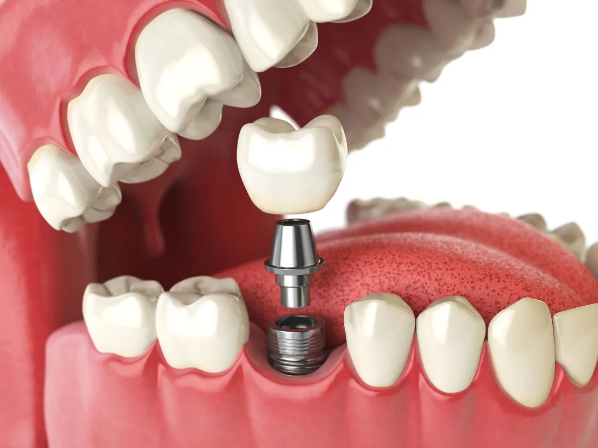

A fixed set of teeth, supported by implants
If you wear a full denture that moves, or most of your teeth are failing, full arch dental implants may be an option. A small number of implants in the jaw support a complete set of fixed teeth that are not taken out at night.

Who asks about full arch implants
Redlynch Dental assesses suitability, plans the treatment with a 3D scan and explains the full cost before anything goes ahead.
Your full denture slips when you eat or talk, or you use adhesive every day.
You have lost most of the teeth in one jaw, or your remaining teeth are loose, decayed or breaking.
You have been told all your teeth need removing and want a fixed alternative to a conventional denture.
You have an implant-retained denture and want teeth that stay in.
What full arch implants are
A full arch replaces all the teeth in the upper or lower jaw on a single fixed bridge.
The bridge is supported by four to six dental implants, small titanium posts placed in the jawbone. Once the implants have healed and bonded with the bone, the bridge is secured to them.
At Redlynch Dental, full arch implant treatment is provided by Dr Max Ryu and Dr Louis Fernandez. Dr Nadia Mullins places single dental implants.
- 4 to 6implants support one fixed bridge for the whole upper or lower jaw.
- Stays inIt doesn’t come out at night and doesn’t need adhesive.
- Cared forIt is cleaned in the mouth and reviewed by your dentist like natural teeth.

How treatment works
Timing differs between patients. Your dentist will give you a plan and a timeframe for your own treatment.
Consultation and 3D scan
Your dentist examines your mouth, takes a 3D X-ray (CBCT) and digital impressions, and talks through your health, your goals and your options. You’ll be told at this stage whether full arch implants suit you.
Planning
The implant positions and the shape of the new teeth are planned from the scan before any treatment starts. You receive a written treatment plan with the full cost and the sequence of appointments.
Implant placement
The implants are placed in the jawbone under local anaesthetic, and oral sedation is available. Any remaining teeth in that arch are removed at the same appointment if they haven’t been already. Your dentist will explain how your appointments are arranged and what to expect while you heal.
Healing
The implants bond with the bone over several months. Temporary bridges or dentures may be offered during healing, depending on your treatment plan and clinical suitability.
Final teeth
Once healed, the final bridge is made to match your face, bite and preferences, then fitted and adjusted.
Reviews
Regular check-ups to check the implants, the gums and the bridge, and to clean areas you can’t reach at home.
It starts with a consultationFind out whether full arch implants suit you, and get a written plan with the full cost before anything goes ahead.
Book a consultation (opens the practice's online booking system in a new tab)Is it right for you?
Not everyone is suitable.
Your dentist will look at the amount and quality of bone in your jaw, the health of your gums, your general health and any medications, and whether you smoke. Some people need extra procedures first, such as bone grafting.
If a full arch isn’t the right option, your dentist will go through the alternatives with you, including what happens if you choose to do nothing for now:
- An implant-retained dentureA removable denture that clips onto two or more implants.
- A conventional dentureA removable full or partial denture.
- Individual implants and bridgesWhere enough natural teeth remain.
Things to consider
- Surgery and healingIt involves surgery and a healing period of months, with some swelling and discomfort in the first days.
- Several appointmentsTreatment runs across several appointments, usually over three to six months or longer depending on healing.
- Daily care and maintenanceThe bridge and implants need daily cleaning and regular professional maintenance. Gum disease around implants can lead to implant loss.
- Possible complicationsAs with any surgery there are possible complications, including infection, nerve disturbance, implants that don’t bond with the bone, and a bridge that needs repair or replacement over time. Your dentist will discuss the risks that apply to you.
- Health factorsSmoking, uncontrolled diabetes and some medications affect healing and long-term success.
The full cost, in writing, before you decide
The cost of a full arch depends on several things, so Redlynch Dental doesn’t quote a single figure before seeing you. After your consultation and scan you receive a written plan with the total cost and what each stage covers.
If you have extras cover, your health fund may contribute towards part of the treatment. Payment options include Afterpay, Zip, Fund My Dental and Denticare. Eligibility and terms are set by each provider. See payments and fees.
What the cost depends on
- The number of implants
- Whether teeth need to be removed
- Whether grafting is needed
- The type of bridge
Book your full arch implant consultation
Book online at a time that suits you, call the team, or send us a question first.
At your consultation
- An examination, 3D X-ray (CBCT) and digital impressions
- A talk through your health, your goals and your options
- Whether full arch implants suit you
- A written plan with the full cost before anything goes ahead
How long does the whole process take?
Usually three to six months from the first consultation to the final bridge, longer if grafting is needed. Your dentist will give you a timeframe for your own case.
Will I be without teeth?
Temporary bridges or dentures may be offered while the implants heal, depending on your treatment plan and clinical suitability. Your dentist will explain what applies to you before treatment starts.
Is it painful?
Implants are placed under local anaesthetic so you are numb during the procedure. Some swelling, bruising and discomfort is normal for a few days afterwards and is managed with the pain relief your dentist recommends.
Can I be sedated?
Local anaesthetic and oral sedation options are available, including prescribed medication such as Valium (diazepam). General anaesthesia and other sedation options are arranged through referral. Your dentist will talk through which options suit you.
Am I too old for implants?
Age on its own isn’t the deciding factor. Bone, gum health and general health are. Your consultation and 3D scan will show whether implants suit you.
How do I clean a full arch bridge?
Brushing, cleaning under the bridge with the tools your dentist shows you, and regular professional cleans. It’s cleaned in the mouth, not taken out.
Does my health fund cover it?
Extras cover may contribute towards some items. What you get back depends on your policy, so check with your fund using the item numbers in your treatment plan.
How much does it cost, and how can I pay?
The cost depends on your treatment, so it is provided after your consultation in an individual treatment plan. Payment options include Afterpay, Zip, Fund My Dental and Denticare, subject to each provider’s eligibility and terms. See payments and fees.
Book a full arch implant consultation
Call Redlynch Dental on (07) 4039 4720 or book online. Your dentist will assess whether full arch implants suit you and give you a written plan with the full cost.
Any surgical or invasive procedure carries risks. Before proceeding, you should seek a second opinion from an appropriately qualified health practitioner.
Replacing one or a few teeth? Read about dental implants